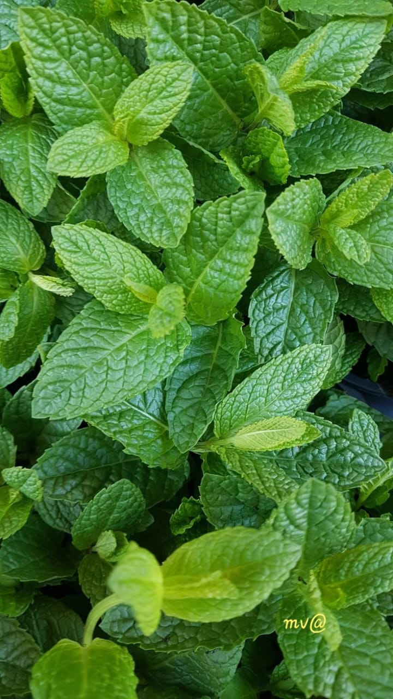
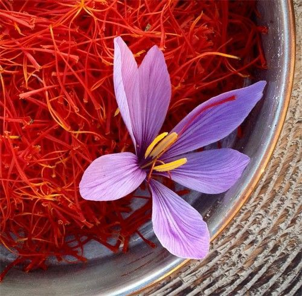
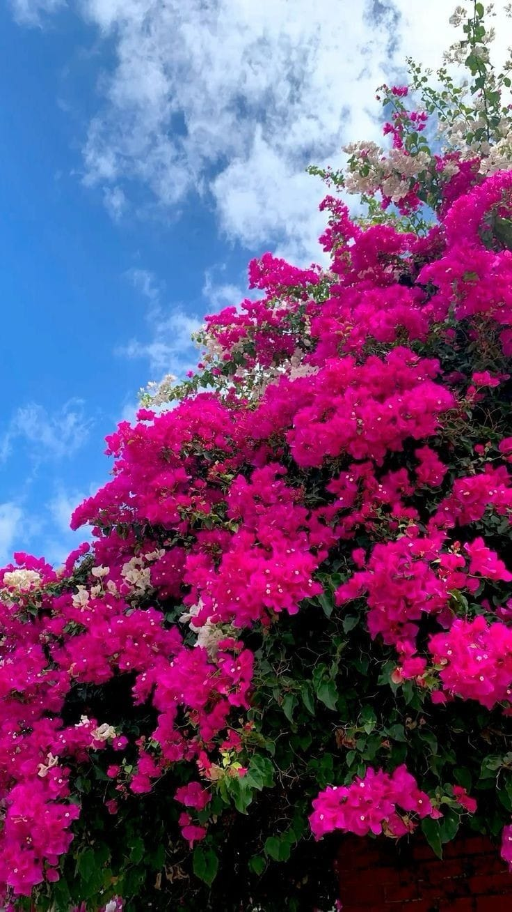
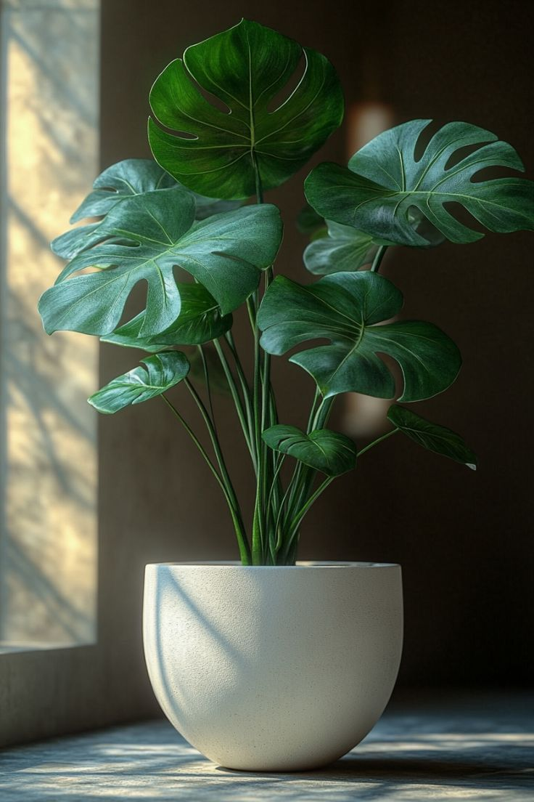

هنا سوف تكون بدايتنا في ازرامنلي والمقصورد فيها ازرع منزلي فلنبدأ بزراعتنا وملىء المكان بالخضار .
النعناعالنعناع هو نبات عشبي يتميز برائحته العطرية القوية وطعمه المنعش , وهو من اشهر الاعشاب المستخدمة في الطهي والعلاجات الطبيعية, يُزرع النعناع بسهولة في المنزل، فهو يحتاج إلى تربة رطبة وري منتظم، وينمو بسرعة ليضيف لمسة خضراء وجميلة لأي حديقة له فوائد صحية مثل تهدئة الصداع، تحسين رائحة الفم، تخفيف أعراض نزلات البرد، والتقليل من التوتر والقلق. طريقة زراعة النعناع
|
 |
الزعفرانالزعفران هو نوع من التوابل الثمينة والمعروفة بلقب "الذهب الأحمر" نظرًا لقيمته العالية ونكهته الفريدة. يُستخرج الزعفران من زهرة "الزعفران السوسني" ويتميز بخيوطه الحمراء الدقيقة التي تمنحه لونه الزاهي ونكهته القوية. يُعتبر الزعفران من أقدم التوابل وأغلاها، ويستخدم في الطهي والعلاج وفي بعض الصناعات التقليدية. فوائد الزعفرانالزعفران غني بمركبات مفيدة، مثل الكروسين والسافرانال، التي تعمل كمضادات للأكسدة. من بين فوائده الصحية:
سبب غلاء سعر الزعفران
|
 |
الجهنمية (المجنونة)هي نبات متسلق على شكل شجيرة، ذات زهور ملونة بألوان مختلفة حسب صنفها. هي نبات دائم الخضرة في المناخات الدافئة، وتتساقط أوراقها عند انخفاض الحرارة أو الري غير الكافي. طريقة زراعة النبتة
أساسيات العناية بها
|
 |
نبتة القفص الصدريتكثير نبتة القفص الصدري
العناية بنبتة القفص الصدري
|
 |